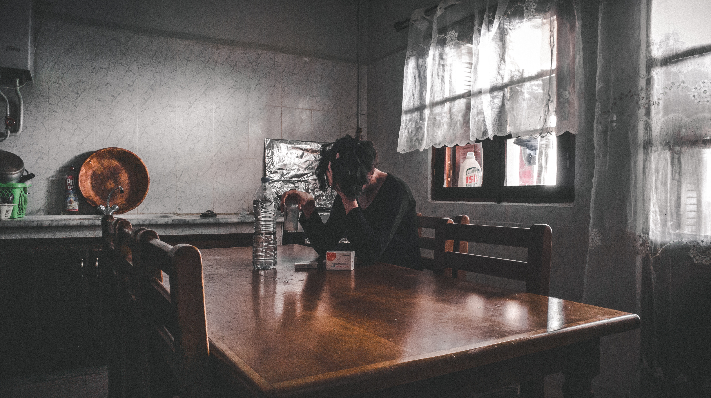

-Jump to section-
- Prevalence of Drinking
- Prevalence of Binge Drinking
- Alcohol Use Disorder
- Alcohol-Related Deaths
- Economic Burden
- Global Burden
- Family Consequences
- Underage Alcohol Use
- Alcohol and Pregnancy
- Alcohol and the Human Body
- Definitions
Prevalence of Drinking (USA):
According to the 2015 National Survey on Drug Use and Health (NSDUH).
86.4% of people ages 18 or older
reported that they drank alcohol at some point in their lifetime; 70.1% reported that they drank in the past year;
56% percent reported that they drank in the past month.
1
Prevalence of Binge Drinking and Heavy Alcohol Use (USA):
In 2015, 26.9% of people ages 18 or older reported that they engaged in binge drinking in the past month; 7% reported that they engaged in heavy alcohol use in the past month. 2
Alcohol Use Disorder (USA):
Adults:
15.1 million adults ages 18 and older
3
(6.2% of this age group
4)
had AUD. This includes 9.8 million men
3
(8.4% of men in this age group
4
) and 5.3 million women
3
(4.2% of women in this age group
4
).
About 6.7% of adults who had AUD in the past year received treatment.
This includes 7.4% of males and 5.4% of females with AUD in this age group.
5
Youth:
An estimated 623,000 adolescents ages 12–176 (2.5% of this age group 7) had AUD. This number includes 298,000 males 6 (2.3% of males in this age group 7 ) and 325,000 females6 (2.7% of females in this age group 7). About 5.2% of youth who had AUD in the past year received treatment. This includes 5.1% of males and 5.3% of females with AUD in this age group. 5
Photo by Ian Valerio on Unsplash
An estimated 88,0008 people (approximately 62,000 men and 26,000 women 8 ) die from alcohol-related causes annually, making alcohol the third leading preventable cause of death in the United States. The first is tobacco, and the second is poor diet and physical inactivity. 9 In 2014, alcohol-impaired driving fatalities accounted for 9,967 deaths (31% of overall driving fatalities). 10
Economic Burden:
Photo by Sharon McCutcheon on Unsplash
In 2010, alcohol misuse cost the United States $249.0 billion. 11 Three-quarters of the total cost of alcohol misuse is related to binge drinking. 11
Global Burden:

Photo by Adolfo Félix on Unsplash
In 2012, 3.3 million deaths, or 5.9% of all global deaths (7.6% for men and 4.1% for women), were attributable to alcohol consumption. 12 In 2014, the World Health Organization reported that alcohol contributed to more than 200 diseases and injury-related health conditions, most notably DSM–IV alcohol dependence, liver cirrhosis, cancers, and injuries. 13
In 2012, 5.1% of the burden of disease and injury worldwide (139 million disability-adjusted life-years) was attributable to alcohol consumption. 12 Globally, alcohol misuse was the fifth leading risk factor for premature death and disability in 2010. Among people between the ages of 15 and 49, it is the first. 14 In the age group 20–39 years, approximately 25% of the total deaths are alcohol attributable. 15
Family Consequences:
Photo by Issam Hammoudi on Unsplash
More than 10% of U.S. children live with a parent with alcohol problems, according to a 2012 study. 16
Underage Alcohol Use:

Prevalence of Drinking:
According to the 2015 NSDUH, 33.1% of 15-year-olds report that they have had at least 1 drink in their lives. 17 About 7.7 million people ages 12–18 (20.3% of this age group 19) reported drinking alcohol in the past month (19.8% of males and 20.8% of females 19).
Prevalence of Binge Drinking:
According to the 2015 NSDUH, approximately 5.1 million people 18 (about 13.4% 19) ages 12–20 (13.4% of males and 13.3% of females 19) reported binge drinking in the past month.
Prevalence of Heavy Alcohol Use:
According to the 2015 NSDUH, approximately 1.3 million people 18 (about 3.3% 19) ages 12–20 (3.6% of males and 3% of females 19) reported heavy alcohol use in the past month.
Consequences of Underage Alcohol Use:
Research indicates that alcohol use during the teenage years could interfere with normal adolescent brain development and increase the risk of developing AUD. In addition, underage drinking contributes to a range of acute consequences, including injuries, sexual assaults, and even deaths—including those from car crashes. 20
Alcohol and College Students:
Photo by Juan Carlos on Unsplash
Prevalence of Alcohol Use:
Prevalence of Drinking: According to the 2015 NSDUH, 58% of full-time college students ages 18–22 drank alcohol in the past month compared with 48.2% of other persons of the same age. 21
Prevalence of Binge Drinking:
According to the 2015 NSDUH, 37.9% of college students ages 18–22 reported binge drinking in the past month compared with 32.6% of other persons of the same age. 21
Prevalence of Heavy Alcohol Use:
According to the 2015 NSDUH, 12.5% of college students ages 18–22 reported heavy alcohol use in the past month compared with 8.5% of other persons of the same age. 21
Researchers estimate that each year:
1,825 college students between the ages of 18 and 24 die from alcohol-related unintentional injuries, including motor-vehicle crashes. 22
696,000 students between the ages of 18 and 24 are assaulted by another student who has been drinking. 23
97,000 students between the ages of 18 and 24 report experiencing alcohol-related sexual assault or date rape. 23
Roughly 20% of college students meet the criteria for AUD. 24
About 1 in 4 college students report academic consequences from drinking, including missing class, falling behind in class, doing poorly on exams or papers, and receiving lower grades overall. 25
Alcohol and Pregnancy:
Photo by Michal Bar Haim on Unsplash
The prevalence of Fetal Alcohol Syndrome (FAS) in the United States was estimated by the Institute of Medicine in 1996 to be between 0.5 and 3.0 cases per 1,000. 26
More recent reports from specific U.S. sites report the prevalence of FAS to be 2 to 7 cases per 1,000, and the prevalence of Fetal Alcohol Spectrum Disorders (FASD) to be as high as 20 to 50 cases per 1,000. 27,28
Alcohol and the Human Body:
Photo by Piron Guillaume on Unsplash
In 2015, of the 78,529 liver disease deaths among individuals ages 12 and older, 47% involved alcohol. Among males, 49,695 liver disease deaths occurred and 49.5% involved alcohol. Among females, 28,834 liver disease deaths occurred and 43.5% involved alcohol. 29
Among all cirrhosis deaths in 2013, 47.9% were alcohol related. The proportion of alcohol-related cirrhosis was highest (76.5%) among deaths of people ages 25–34, followed by deaths of people ages 35–44, at 70%. 30
In 2009, alcohol-related liver disease was the primary cause of almost 1 in 3 liver transplants in the United States. 31
Drinking alcohol increases the risk of cancers of the mouth, esophagus, pharynx, larynx, liver, and breast. 32
Definitions
Heavy Alcohol Use:
SAMHSA defines heavy alcohol use as binge drinking on 5 or more days in the past month.
NIAAA’s Definition of Drinking at Low Risk for Developing AUD:
For women, low-risk drinking is defined as no more than 3 drinks on any single day and no more than 7 drinks per week. For men, it is defined as no more than 4 drinks on any single day and no more than 14 drinks per week. NIAAA research shows that only about 2 in 100 people who drink within these limits have AUD.
Binge Drinking:
NIAAA defines binge drinking as a pattern of drinking that brings blood alcohol concentration (BAC) levels to 0.08 g/dL. This typically occurs after 4 drinks for women and 5 drinks for men—in about 2 hours. 33 The Substance Abuse and Mental Health Services Administration (SAMHSA), which conducts the annual National Survey on Drug Use and Health (NSDUH), defines binge drinking as 5 or more alcoholic drinks for males or 4 or more alcoholic drinks for females on the same occasion (i.e., at the same time or within a couple of hours of each other) on at least 1 day in the past month. 34
Alcohol Use Disorder (AUD):
AUD is a chronic relapsing brain disease characterized by an impaired ability to stop or control alcohol use despite adverse social, occupational, or health consequences. AUD can range from mild to severe, and recovery is possible regardless of severity. The fourth edition of the Diagnostic and Statistical Manual (DSM-IV), published by the American Psychiatric Association, described two distinct disorders—alcohol abuse and alcohol dependence—with specific criteria for each. The fifth edition, DSM-5, integrates the two DSM-IV disorders, alcohol abuse, and alcohol dependence, into a single disorder called alcohol use disorder, or AUD, with mild, moderate, and severe subclassifications.